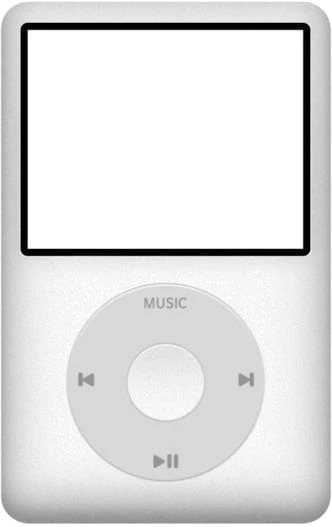

Hi, my name is Shrey Mehra. Product marketing and brand strategy, Melbourne.


I build brands people want to belong to, and the case for why they pay off.
Product marketing, brand strategy & growth. Melbourne.
I build brands people want to belong to, and the case for why they pay off.
Product marketing, brand strategy & growth. Melbourne.
Worked with
 Employer
Employer Employer
Employer Employer
Employer Internship
Internship Event
Event Employer
Employer College project
College project College project
College projectWhat I do
What it moved
Launch and funnel
+310%click-through, new product and pricing launchesTickertapeLifecycle and retention
20kmonthly active users grown through ad campaignsTickertapeCommercial and operations
+56%sales uplift, with profit up 32% in Q2Bliss and BirchCommunity and events
1.2Mviews, sold out in two daysTEDxVIPSInternal comms and alignment
+46%engagement, month on monthiSelect and Compare the MarketCommunity and events
130+volunteers ledTEDxVIPSLaunch and funnel
+140%customer experience scoreTickertapeLifecycle and retention
−16%churn, month on month, through lifecycle marketingTickertapeCommercial and operations
−78%vendor costs, renegotiated across 20+ eventsiSelect and Compare the MarketLifecycle and retention
+170%engagement, year on yearTickertapeCommercial and operations
~30%event costs, through vendor and budget managementTEDxUniMelbCommunity and events
+65%sign-ups, engagement up 40%TEDxUniMelbLaunch and funnel
160kcustomers reached across 20 locationsTickertapeInternal comms and alignment
700+employees aligned across APACiSelect and Compare the Market 02 / Selected work
02 / Selected workI am Shrey Mehra, a specialist in generalisation who has always had one fear: being linear.Also the same person who saved their company more than 200K AUD by finding a legal loophole, because an idea arrived while taking a shower.That is who I am, and that is why this exists.
What I build to Shrey’s Bizarre Adventures

04 / Pick my brainThe first three a recruiter asks. The other six are on the long version.
Elsewhere
Made by , duh
, duh